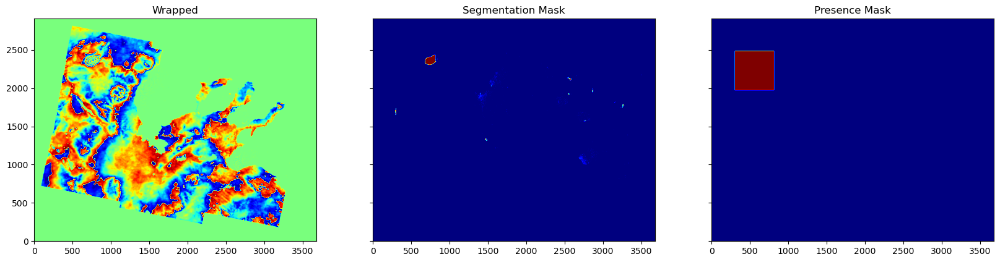

Generating Masks and Presence Predictions#
Imports#
[ ]:
%cd ..
%pwd
%pip install tensorflow
[2]:
import os
import numpy as np
import matplotlib.pyplot as plt
os.environ["TF_CPP_MIN_LOG_LEVEL"] = "3"
plt.rcParams["figure.figsize"] = (20, 10)
from tensorflow.keras.models import load_model
from osgeo import gdal
from PIL import Image
from math import ceil
from typing import Tuple
from insar_eventnet import io, inference
%cd notebooks
%pwd
/home/jovyan/AI-Event-Monitoring/notebooks
[2]:
'/home/jovyan/AI-Event-Monitoring/notebooks'
Initialize Variables#
[3]:
tile_size = 512
crop_size = 512
mask_model_path = "models/masking_model"
pres_model_path = "models/classification_model"
image_path = input("Image Path: ")
image_name = image_path.split("/")[-1].split(".")[0]
output_path = f"masks_inferred/{image_name}_mask.tif"
mask_model = load_model(mask_model_path)
pres_model = load_model(pres_model_path)
is_wrapped = False
if is_wrapped:
wrapped, gdal_dataset = io.get_image_array(image_path)
else:
unwrapped, gdal_dataset = io.get_image_array(image_path)
wrapped = np.angle(np.exp(1j * (unwrapped)))
Image Path: SAR_DATA/Positives/S1BA_20210303T162334_20210309T162415_VVR006_INT80_G_ueF_D75C_unw_phase.tif
WARNING:tensorflow:Mixed precision compatibility check (mixed_float16): WARNING
The dtype policy mixed_float16 may run slowly because this machine does not have a GPU. Only Nvidia GPUs with compute capability of at least 7.0 run quickly with mixed_float16.
If you will use compatible GPU(s) not attached to this host, e.g. by running a multi-worker model, you can ignore this warning. This message will only be logged once
/home/jovyan/.local/envs/rtc_analysis/lib/python3.9/site-packages/osgeo/gdal.py:287: FutureWarning: Neither gdal.UseExceptions() nor gdal.DontUseExceptions() has been explicitly called. In GDAL 4.0, exceptions will be enabled by default.
warnings.warn(
Inference on a Single Wrapped or Unwrapped Image#
[4]:
mask, presence_mask, presence_values = inference.mask_with_model(
mask_model=mask_model,
pres_model=pres_model,
arr_w=wrapped,
tile_size=tile_size,
crop_size=crop_size,
)
Plot Results#
[5]:
if np.max(presence_values) > 0.7:
print("Positive!")
else:
print("Negative!")
mask[unwrapped == 0] = 0
inference.plot_results(wrapped, mask, presence_mask)
Positive!

Save with Geo-Metadata#
[6]:
if not os.path.exists("masks_inferred"):
os.makedirs("masks_inferred")
output_img = Image.fromarray(mask)
output_img.save(output_path)
out_dataset = gdal.Open(output_path, gdal.GA_Update)
out_dataset.SetProjection(gdal_dataset.GetProjection())
out_dataset.SetGeoTransform(gdal_dataset.GetGeoTransform())
out_dataset.FlushCache()
[6]:
0
[ ]: